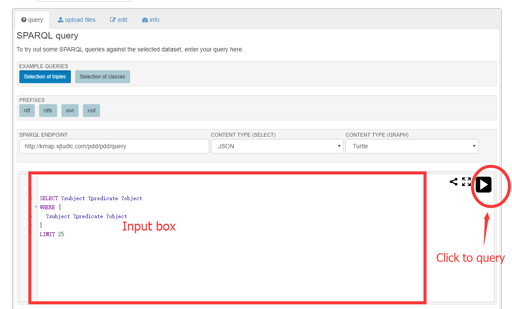
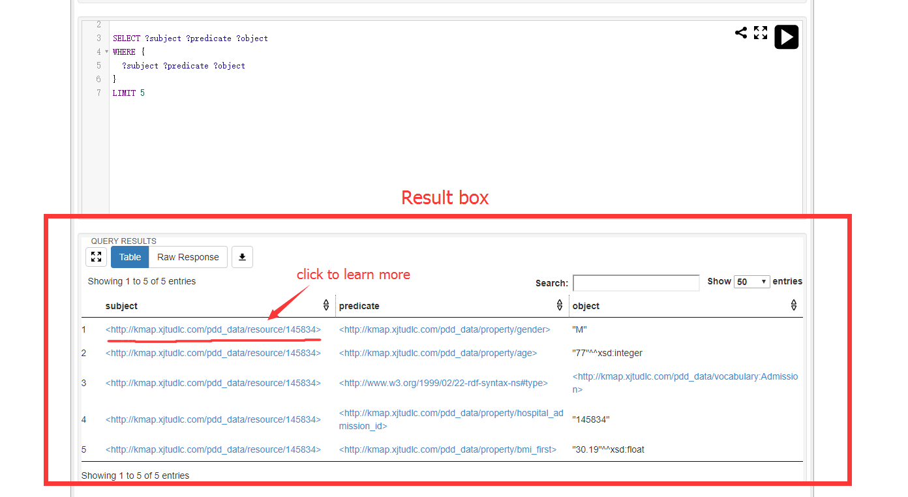
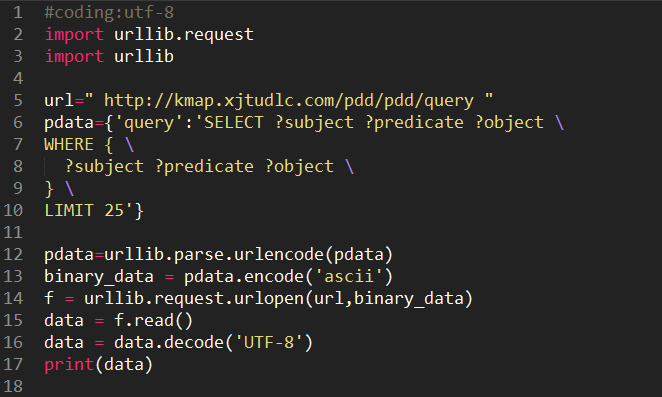

Tutorial
Tutorial at a glance
Our data set provides the sparql endpoint, so you can use any programming language to query, based on the HTTP protocol.
Below we provide examples of online queries or queries using a programming language such as Python, Java ...
Sparql Search Examples
1. Amount of Patients that suffered from Sepsis (ICD9CM ID: 995.91)
SELECT (COUNT (?subject) AS ?amount)
WHERE {
?subject ?predicate <http://purl.bioontology.org/ontology/ICD9CM/995.91>
}
2. Drugs that patients suffered from Sepsis took
SELECT ?subject ?drugid
WHERE {
?subject ?predicate <http://purl.bioontology.org/ontology/ICD9CM/995.91>.
?subject <http://kmap.xjtudlc.com/pdd_data/property/take_drugbank_id> ?drugid
}
3. Patients that suffered from Sepsis and took Insulin Human (DrugBank ID: DB00030)
SELECT ?subject
WHERE {
?subject ?predicate <http://purl.bioontology.org/ontology/ICD9CM/995.91>.
?subject <http://kmap.xjtudlc.com/pdd_data/property/take_drugbank_id> <http://bio2rdf.org/drugbank:DB00030>
}
4. Amount of drugs that each patient suffered from Sepsis took
SELECT ?subject (COUNT (?drugid)AS ?amount)
WHERE {
?subject ?predicate <http://purl.bioontology.org/ontology/ICD9CM/995.91>.
?subject <http://kmap.xjtudlc.com/pdd_data/property/take_drugbank_id> ?drugid
}
GROUP BY ?subject
Online Query
First, Open the website
Second, Enter your own query statement in the input box. By the way, you can use the examples we provide above.
Next, you can get the results below.
Coding by yourself
No matter what language you use, you can send a post request to the endpoint with the unique parameter query, and you can get the answer.
Sparql Endpoint Url (Request URL) : http://kmap.xjtudlc.com/pdd/pdd/queryRequest Method : post
Parameter : query (Your Sparql query)
Python example:
